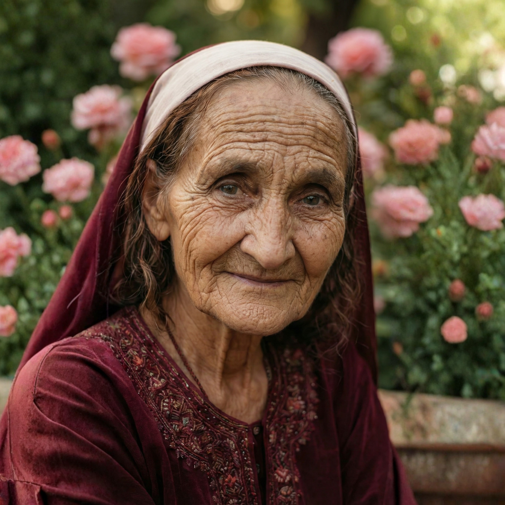

Народный целитель · Советский Туркменистан · 93 года мудрости
«Природа знает лучше любого доктора, доченька»
Ответь на 4 вопроса — получи личный народный рецепт
«Расскажи мне, доченька, что тебя беспокоит?»
Что беспокоит больше всего?
«А давно ли это тебя беспокоит, золотая?»
Как давно это беспокоит?
«Скажи мне, сколько тебе лет — это важно для рецепта»
Сколько тебе лет?
«Хорошо, последний вопрос...»
Что уже пробовала?
Бабушка думает над твоим рецептом
Реальные истории от тех, кому помогло
Спина мучила три года. Врачи говорили — операция. Попробовала рецепт с чёрным тмином и чабрецом от Бабушки Анны. Через две недели боль ушла на 70%. Теперь всем рассказываю.
Бессонница замучила после выхода на пенсию. Валерьянка не помогала. Бабушка посоветовала мелиссу с мёдом и пустырник — уже через неделю сплю как в молодости. Спасибо от души!
Давление скакало, таблетки пила горстями. Попробовала рецепт с боярышником и гранатом. Давление стабилизировалось. Теперь советую всем подругам — они тоже в восторге.
Народная мудрость, проверенная поколениями
Только травы и натуральные ингредиенты. Никакой химии.
Бабушка говорит с тобой как с родной — с заботой и без осуждения.
Персональный рецепт сразу — без очереди и без записи.
Всегда напоминаем: при серьёзных симптомах — к врачу. Только народные советы.
Загляни в справочник рецептов или напиши бабушке лично в Telegram